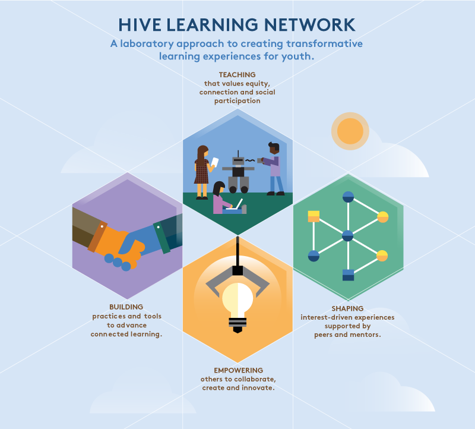

Core Values and Principles
Hive NYC is a dynamic movement in which the community members together determine the future direction the network takes. However, we share a commitment to advance the adoption of digital skills and web literacy through connected learning.
Hive NYC programs are:
- Innovative
- We originate and explore creative new approaches to learning.
- Meaningful
- We collaborate on a common vision to unlock real-world opportunities.
- Participatory
- We build solutions together on challenges stimulated by learner (and community) interest.
- Open
- Our inclusive distributed network provides equitable access to ordinarily under-served communities.
Hive NYC contributors:
- Create and try out new tools and practices.
- Connect young people to relevant academic, work or civic opportunity.
- Engage youth by incorporating self-direction and hands-on making into learning experiences.
- Design opportunities to learn valued skills and competencies.
- Support and encourage collaboration between members (and youth).
- Build, test and spread solutions via iterative, constructive learning activities.
- Learn in a social context by fostering contribution, cooperation and interaction.
- Share resources, opportunities and learning gains.
- Leverage technology and digital media to equip youth to fully participate on the web.
- Work open, preserving interoperability and distributed access to resources.
- Learn together—as a network.
Hive welcomes participation in whatever way suits your unique situation—your contribution will be valued, whatever form it takes.
Vision and Goals
Over the next five years, Hive's goals are to:
- Mobilize more educators to adopt connected learning practices and teach web literacy within a growing constellation of Hive Learning Networks.
- Create high-quality connected learning and web literacy tools, content, curriculum and practices for broad use.
- Catalyze schools, youth programs, and city agencies to provide rich connected learning and web literacy programs, especially in under-served communities.
- Grow demand for Hive Learning Events, Communities and Networks in new locations and sectors.

When educators and organizations make connected learning central to their practices, and more youth have opportunities to gain new digital skills, Hive will have realized its ambitious vision of educational transformation.
For more on these goals see Hive Learning Networks’ Vision, Goals and Conditions for Impact.